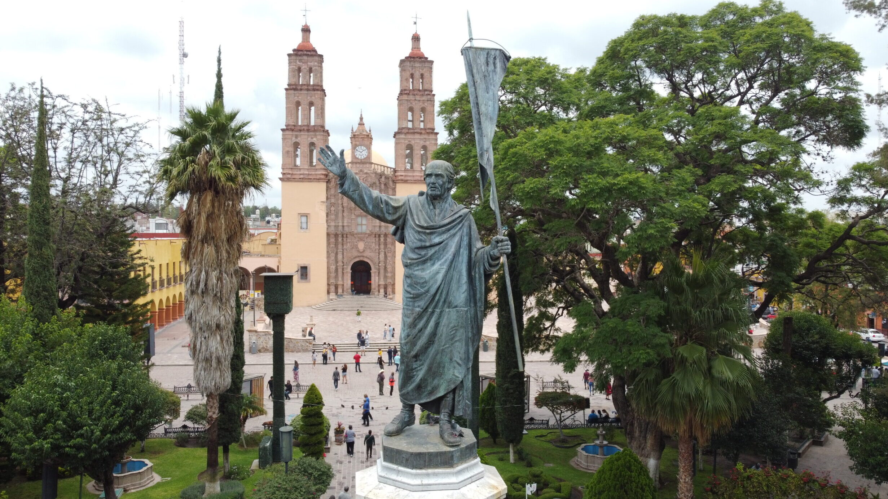
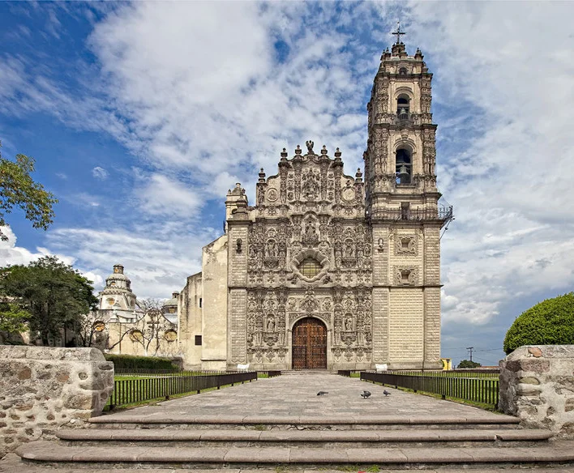

Pueblos Mágicos
Cerca de la Ciudad de México, podemos encontrar pueblos mágicos que merecen ser visitados. Se denominadon así porque son sitios con símbolos y leyendas, poblados con historia que en muchos casos han sido escenarios de hechos trascendentes para el país. Son lugares que muestran la identidad nacional en cada uno de sus rincones, con una magia que emana de sus atractivos. Actualmente, hay 132 destinos a lo largo de todo México que cumplen con las características para tener este nombramiento.

Puebla
Cholula

Guanajuato
Dolores Hidalgo
Guerrero
Taxco
